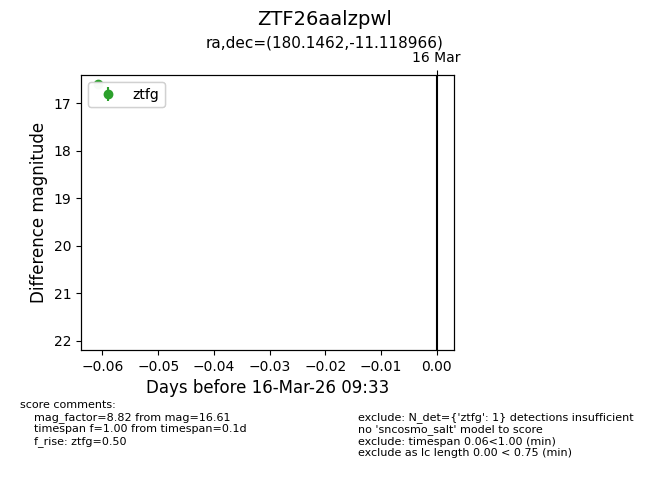
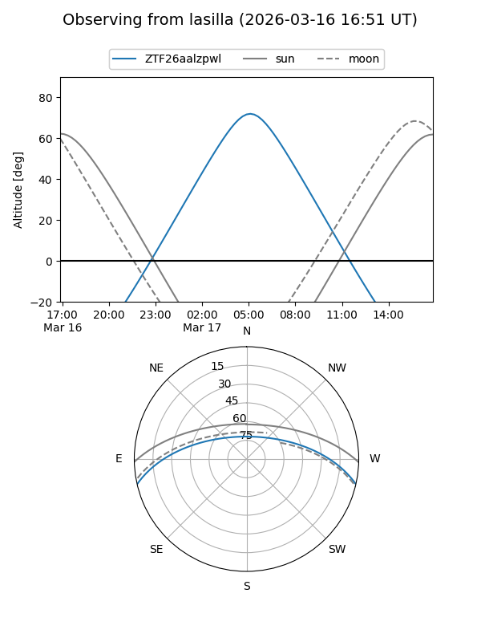
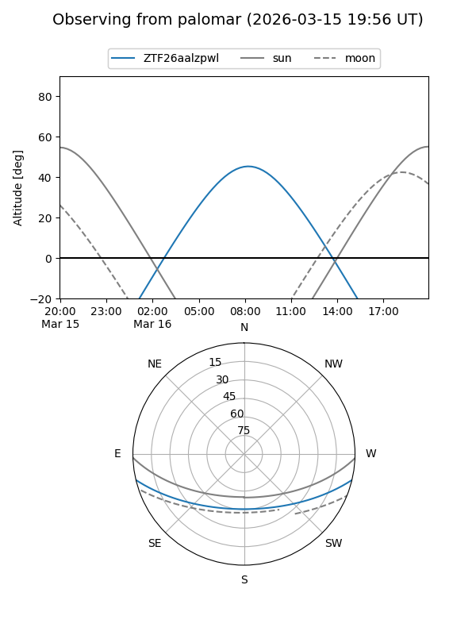

ZTF26aalzpwl
Target ZTF26aalzpwl at 2026-03-16 09:35
Aliases and brokers:
FINK: link
Lasair: link
ALeRCE: link
alt names
ZTF26aalzpwl (ztf,fink_ztf)
Coordinates:
equatorial (ra, dec) = 180.1462,-11.11897
equatorial (HMS+DMS) = 12:00:35.09,-11:07:08.28
galactic (l, b) = (283.3812,+49.81254)
Flags:
Photometry:
last ztfg=16.61
1 ztfg detections
Lightcurve

Visibility


Additional plots